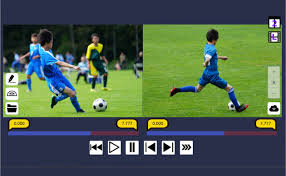
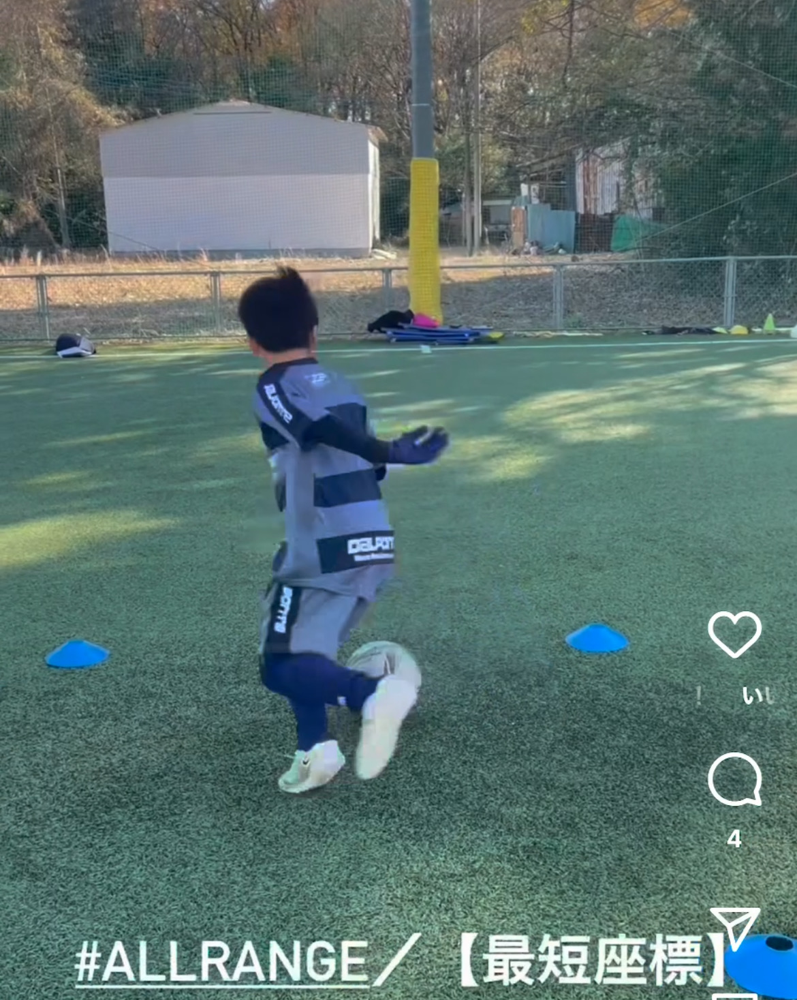

こんなお悩み、ありませんか？
保護者の皆さんへ
カメラロールがパンク寸前…
スマホの容量が練習動画でいっぱい。大切な家族写真まで消す羽目に。
あの動画、どこいった?
「半年前のあのシュート」を見返したいのに、撮りすぎた動画から探せない…
成長を実感できない
「上手くなった」とは思うけど、具体的にどこが良くなったか…
FEATURES
momentがその悩みをすべて解決します
01
「リフティング」の成長がひと目でわかる
#ドリブル #シュート #パス など技術タグで動画を自動整理。お子様の「できた!」の軌跡を、時系列で簡単に振り返れます。
02

プロのお手本と「並べて比較」できる
お手本動画と、お子様のプレーを並べて再生。専門家でなくても「どこが違うのか」が客観的に分かり、次の練習に活かせます。
03

サッカーの記録だけに集中できる
日常の写真や動画と混ざらない、サッカー専用のストレージ。大切なプレー動画だけを、確実に見つけられます。
使い方はシンプル、たった3ステップ
1
撮影
練習や試合を
いつも通り撮影
→
2
タグ付け
技術名を選んで
タップするだけ
→
3
振り返り
成長の軌跡を
いつでも確認
BENEFITS
「見守る喜び」と「上手くなる実感」を、このアプリで。
FOR PARENTS
「バラバラだった記録が「成長アルバム」へ。
バラバラだったプレー動画が、お子様だけの「成長アルバム」に。日々の頑張りを実感できるから、応援がもっと楽しくなります。
- 半年前と今を比較して、具体的な成長を可視化
- 祖父母や親戚にも簡単にシェア可能
- 「頑張ったね」が数字と映像で証明できる
FOR PLAYERS
「上手くなりたい」を、確かな「上達」に。
自分のプレーを客観的に見ることで、課題が明確に。お手本との違いが、次の「できた!」に繋がります。
- プロの動きと自分の動きを並べて分析
- できなかったことが「できる」瞬間を記録
- モチベーション維持に最適な成長実感
今すぐ、わが子の確かな成長を、タグで実感しよう。
撮りっぱなしの動画では気づけない、「確かな成長」がそこにある。